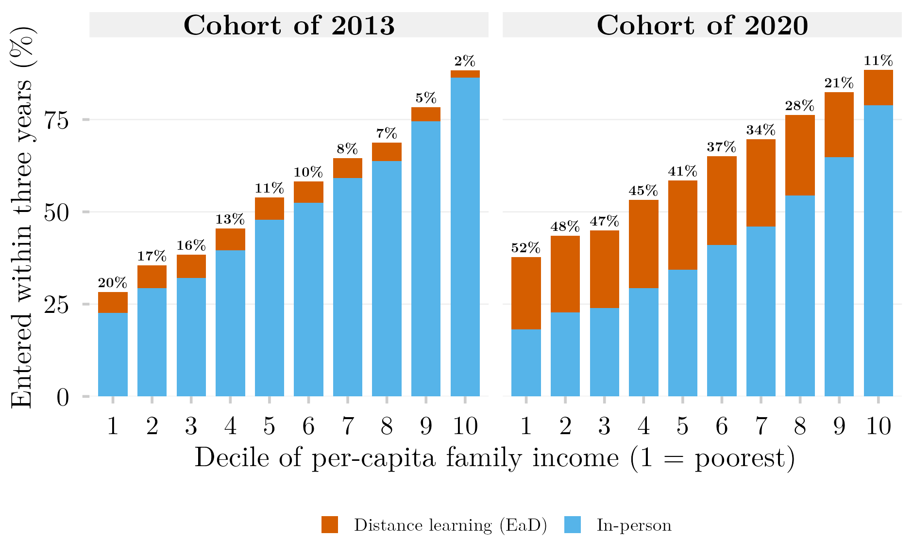
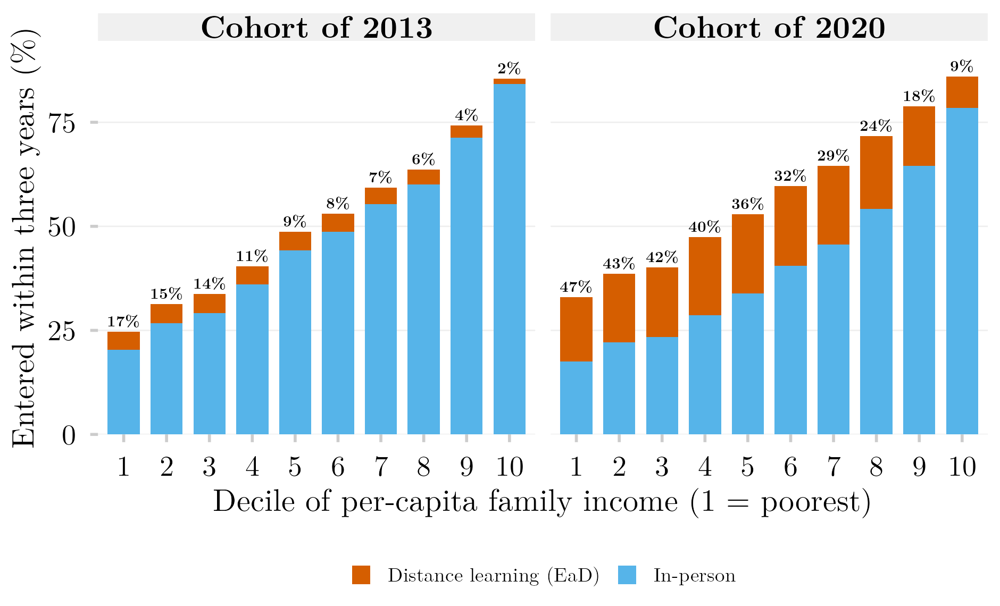

Ingresso a Distância e Presencial por Decil de Renda per Capita: as Coortes do Ensino Médio de 2013 e 2020

Visão Geral
Cada barra é a parcela de um decil de renda de uma coorte do ensino médio que ingressou no ensino superior em até três anos depois do último ano escolar, dividida entre ensino a distância (EaD) e presencial. A porcentagem acima de cada barra é a parcela do EaD entre os ingressantes daquele decil. Entre as coortes de 2013 e 2020, o ingresso presencial cai em todos os decis, 4,4 pontos percentuais no mais pobre e até 13,5 no meio da distribuição, enquanto o ingresso a distância sobe em todos os decis. O ingresso total sobe 9,4 pontos no decil mais pobre e 0,2 no mais rico. No decil mais pobre, o EaD passa de 20% para 52% dos ingressantes; no mais rico, de 2% para 11%.
Os dados são registros administrativos vinculados (Censo Escolar, ENEM, Censo da Educação Superior) consultados pela plataforma SEDAP+ do INEP, que devolve apenas tabelas agregadas. As tabelas agregadas que a figura lê e o SQL exato de cada consulta que as produziu são publicados com este post, de modo que a figura reproduz sem credencial.
Metodologia
Coorte, vínculo e decis. Mesmo desenho da figura irmã sobre portas de entrada: todo estudante matriculado na última série do ensino médio no Censo Escolar de 2013 ou de 2020, com 16 a 22 anos, que fez o ENEM do mesmo ano, vinculado por CPF mascarado; decis de renda familiar per capita construídos a partir da faixa de renda do ENEM dividida pelo grupo de número de moradores, cortados dentro de cada coorte.
Ingresso e modalidade. O estudante conta como ingressante se qualquer registro de matrícula com ano de ingresso nos três anos seguintes aparece no Censo da Educação Superior, qualquer que seja a situação posterior desse registro. A modalidade vem de TP_MODALIDADE_ENSINO (1 presencial, 2 a distância). Quando a mesma pessoa tem uma matrícula presencial e outra a distância na janela, o EaD prevalece por convenção: a pergunta é quem estuda a distância.
Por que isto é um piso para o EaD. O ingresso no EaD não exige ENEM, e muitos ingressantes a distância nunca aparecem numa coorte construída a partir do exame. A cobertura do vínculo também difere por modalidade: medida para 2022, chegou a cerca de 0,68 vez a contagem esperada no EaD privado, contra 1,71 vez no presencial público. Toda proporção de EaD aqui deve ser lida como “pelo menos isto”; pela mesma razão, a mudança entre as coortes é uma leitura conservadora do deslocamento.
Camada de privacidade. O SEDAP+ devolve contagens sob orçamento de privacidade diferencial (\(\varepsilon = 1\)) e suprime células pequenas do resultado: 0,49% das células em 2013 e nenhuma em 2020. Fora isso, as contagens são exatas nesse nível de agregação, e por isso nenhuma faixa de confiança é desenhada.
Uma definição anterior de ingresso
A primeira versão desta figura contava apenas registros de matrícula marcados com IN_MATRICULA = 1, que indica matrícula ativa ou concluída na data de referência do censo. Nessa definição, quem ingressou e saiu antes do censo do ano de ingresso contava como se nunca tivesse ingressado. A diferença é maior no EaD: na coorte de 2020, o ingresso a distância sobe de 4 a 5 pontos percentuais nos oito decis inferiores quando o filtro sai, e no decil mais pobre vai de 15,5% para 19,5%. A figura abaixo reproduz a definição anterior para comparação.

Como Citar
Se você usar esta figura ou o pipeline que a gera, cite tanto a dissertação quanto esta análise específica. As referências seguem a 7ª edição da APA.
Dissertação (em elaboração; a entrada será atualizada após a defesa):
Mançano, T. (2026). Inequality in access to tertiary education in Brazil: Household incomes, reforming policies, and the politics of who gets in (1990s–2020s) [Dissertação de mestrado não publicada]. Universidade de São Paulo.
Esta figura e o pipeline:
Mançano, T. (2026, 23 de setembro). Ingresso a distância e presencial por decil de renda per capita: As coortes do ensino médio de 2013 e 2020 [Figura e pipeline reprodutível]. Open Data Analysis. https://mancano-tales.github.io/open-data-analysis/pt/posts-pt/portas-renda-coortes-ead/
No texto: (Mançano, 2026) — ao citar várias análises deste catálogo no mesmo trabalho, a APA as distingue como 2026a, 2026b, … na ordem em que aparecem na lista de referências.
BibTeX:
@mastersthesis{Mancano2026Thesis,
author = {Man\c{c}ano, Tales},
title = {Inequality in Access to Tertiary Education in Brazil: Household
Incomes, Reforming Policies, and the Politics of Who Gets In
(1990s--2020s)},
school = {University of S\~{a}o Paulo},
year = {2026},
type = {Master's thesis},
note = {Unpublished; Graduate Program in Political Science}
}
@misc{Mancano2026_portas_renda_coortes_ead_pt,
author = {Man\c{c}ano, Tales},
title = {Ingresso a dist\^{a}ncia e presencial por decil de renda per capita: As coortes do ensino m\'{e}dio de 2013 e 2020},
year = {2026},
month = sep,
howpublished = {Open Data Analysis, \url{https://mancano-tales.github.io/open-data-analysis/pt/posts-pt/portas-renda-coortes-ead/}},
note = {Figura e pipeline reprodutível. Código-fonte: \url{https://github.com/mancano-tales/open-data-analysis}, pasta posts/portas-renda-coortes-ead/. Acesso em AAAA-MM-DD}
}Uma versão permanente (tag do Git + DOI no Zenodo) será linkada aqui assim que a dissertação for defendida; até lá, cite a URL da página acima e acrescente a data de acesso (código-fonte: https://github.com/mancano-tales/open-data-analysis, pasta posts/portas-renda-coortes-ead/).
Pipeline
A figura lê quatro tabelas agregadas redistribuídas na pasta data/ do post, uma por coorte e definição de ingresso. Cada linha é uma contagem de estudantes numa célula de faixa de renda (FAIXA_RENDA, A–Q) × grupo de moradores (MORADORES_GRUPO) × modalidade (COD_MODALIDADE: 0 sem ingresso, 1 a distância, 2 presencial).
| Tabela | Coorte | Definição de ingresso | SQL enviado ao SEDAP+ |
|---|---|---|---|
matriz_2013_fina_ead.csv |
2013 | qualquer registro (figura acima) | sql/matriz_2013_fina_ead.sql |
matriz_2020_fina_ead.csv |
2020 | qualquer registro (figura acima) | sql/matriz_2020_fina_ead.sql |
matriz_2013_fina_ead_com_in_matricula.csv |
2013 | IN_MATRICULA = 1 (anterior) |
sql/matriz_2013_fina_ead_com_in_matricula.sql |
matriz_2020_fina_ead_com_in_matricula.csv |
2020 | IN_MATRICULA = 1 (anterior) |
sql/matriz_2020_fina_ead_com_in_matricula.sql |
Cada arquivo .sql é o texto exato enviado à API do SEDAP+, copiado do log de consultas, com um cabeçalho que registra quando rodou, os parâmetros de privacidade e a parcela de células suprimidas. Para desenhar as duas figuras a partir das tabelas:
plot.R— constrói os decis de renda per capita e grava as duas figuras emoutput/figures/portas-renda-coortes-ead/eoutput/figures/portas-renda-coortes-ead-in-matricula/— compare com othumbnail.pnge othumbnail-in-matricula.pngdeste post
Para reextrair as tabelas dos microdados vinculados (exige credencial SEDAP+ do INEP exportada como SEDAP_TOKEN), rode, a partir da raiz do projeto:
shared-pipeline/sedap/010_SEDAP_Cliente.R— cliente da API SEDAP+, carregado pelo script abaixoshared-pipeline/sedap/portas/054_Extrair_EaD.R— monta e roda as consultas das duas coortes e gravadata-raw/sedap/portas/matriz_<ano>_fina_ead.csv; rode de novo comFILTRO_IN_MATRICULA=TRUEno ambiente para reproduzir a definição anterior. Quando esses arquivos existem, oplot.Ros lê de preferência às cópias redistribuídas
Reprodutibilidade
Tier: B (agregado redistribuído) — a figura reproduz sem credencial a partir das tabelas em data/; a reextração exige acesso ao SEDAP+.
As tabelas não carregam registro individual: cada linha é uma contagem de estudantes numa célula de faixa de renda × grupo de moradores × modalidade, tal como liberada pela plataforma depois do seu próprio controle de divulgação. O script de extração só roda com credencial aprovada do INEP; sem ela, a lógica e o SQL exato permanecem disponíveis para auditoria.